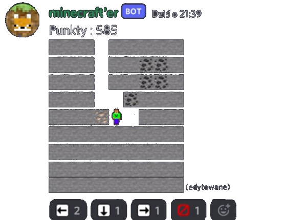
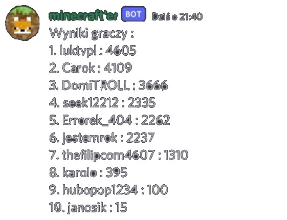
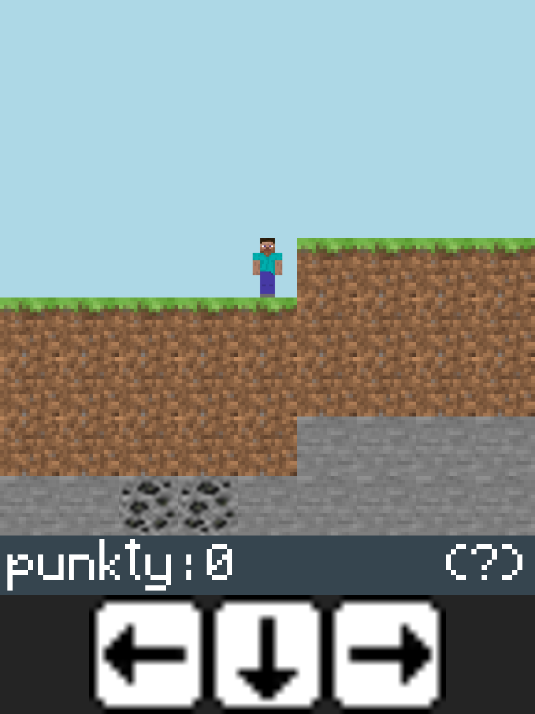
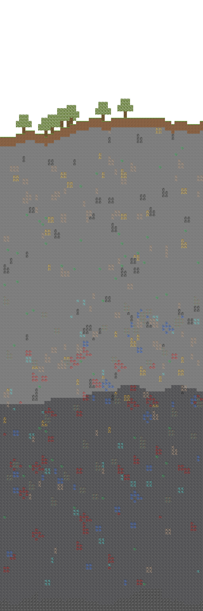

Begining
Oryginally called minecraft'er
MCPP came to be thanks to simple idea of playing minecraft on discord. As a begining programmer i was looking for cool projects to work on and that was it.
Oryginal codebase was written in javascript but was later rewritten in C++ to "boost performance". At that time it was easier for me to write less shitty/slow code the lower (level) i went.
First version of bot was very basic and slow due to discord limit rate which blocks bot if it sends too many requests per second (the more players the slower it was)
Bot from the begining had a ranking ot can be seen on the picture above
Web port
Some time later MCPP got very primitve web port with source code on github
It wasn't really anything special but later i managed to port entire world generator to Web (head to seed section)
After playing game players were give their world seed and could check out entire world they had just been exploring
End of life
Before the end of bot's life i managed to:
implement nether dimension

moved from normal messages to embeds which have higher character limit there for allow having bigger screen
switch from reaction based controll to button base controll which are limited on the client (user) side as a result bot wasn't slower anymore while more players played
add skin system there was limited amount of skins but still something cosmetic was nice
write per player inventory, every block broken by player was put in their inventor, there was a plan to add crafting and shop and stuff
introduce building up mechanism leting you place block form inventory under player in order to get up
Conclusion
Overall the bot was awesome project to work on. If i've managed to monetize it back then (without being evil) i would till propably work on it today.
I am not planning to comback to this project for now. Unless someone is interested in paying me for maintaing it and shaping as they desire :3
Either way the entire codebase is available under MIT license on github